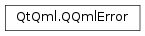

QQmlError¶
Synopsis¶
Functions¶
- def
column() - def
description() - def
isValid() - def
line() - def
messageType() - def
object() - def
setColumn(arg__1) - def
setDescription(arg__1) - def
setLine(arg__1) - def
setMessageType(messageType) - def
setObject(arg__1) - def
setUrl(arg__1) - def
toString() - def
url()
Detailed Description¶
-
class
PySide2.QtQml.QQmlError¶ -
class
PySide2.QtQml.QQmlError(arg__1) Parameters: arg__1 – PySide2.QtQml.QQmlError
-
PySide2.QtQml.QQmlError.column()¶ Return type: PySide2.QtCore.int
-
PySide2.QtQml.QQmlError.description()¶ Return type: unicode
-
PySide2.QtQml.QQmlError.isValid()¶ Return type: PySide2.QtCore.bool
-
PySide2.QtQml.QQmlError.line()¶ Return type: PySide2.QtCore.int
-
PySide2.QtQml.QQmlError.messageType()¶ Return type: PySide2.QtCore.QtMsgType
-
PySide2.QtQml.QQmlError.object()¶ Return type: PySide2.QtCore.QObject
-
PySide2.QtQml.QQmlError.setColumn(arg__1)¶ Parameters: arg__1 – PySide2.QtCore.int
-
PySide2.QtQml.QQmlError.setDescription(arg__1)¶ Parameters: arg__1 – unicode
-
PySide2.QtQml.QQmlError.setLine(arg__1)¶ Parameters: arg__1 – PySide2.QtCore.int
-
PySide2.QtQml.QQmlError.setMessageType(messageType)¶ Parameters: messageType – PySide2.QtCore.QtMsgType
-
PySide2.QtQml.QQmlError.setObject(arg__1)¶ Parameters: arg__1 – PySide2.QtCore.QObject
-
PySide2.QtQml.QQmlError.setUrl(arg__1)¶ Parameters: arg__1 – PySide2.QtCore.QUrl
-
PySide2.QtQml.QQmlError.toString()¶ Return type: unicode
-
PySide2.QtQml.QQmlError.url()¶ Return type: PySide2.QtCore.QUrl
© 2018 The Qt Company Ltd. Documentation contributions included herein are the copyrights of their respective owners. The documentation provided herein is licensed under the terms of the GNU Free Documentation License version 1.3 as published by the Free Software Foundation. Qt and respective logos are trademarks of The Qt Company Ltd. in Finland and/or other countries worldwide. All other trademarks are property of their respective owners.